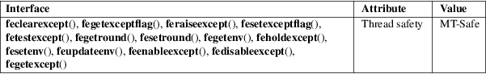

feclearexcept, fegetexceptflag, feraiseexcept, fesetexceptflag, fetestexcept, fegetenv, fegetround, feholdexcept, fesetround, fesetenv, feupdateenv, feenableexcept, fedisableexcept, fegetexcept − floating-point rounding and exception handling
Math library (libm, −lm)
#include <fenv.h>
int
feclearexcept(int excepts);
int fegetexceptflag(fexcept_t *flagp, int
excepts);
int feraiseexcept(int excepts);
int fesetexceptflag(const fexcept_t *flagp,
int excepts);
int fetestexcept(int excepts);
int
fegetround(void);
int fesetround(int rounding_mode);
int
fegetenv(fenv_t *envp);
int feholdexcept(fenv_t *envp);
int fesetenv(const fenv_t *envp);
int feupdateenv(const fenv_t *envp);
These eleven functions were defined in C99, and describe the handling of floating-point rounding and exceptions (overflow, zero-divide, etc.).
Exceptions
The divide-by-zero exception occurs when an operation
on finite numbers produces infinity as exact answer.
The overflow exception occurs when a result has to be represented as a floating-point number, but has (much) larger absolute value than the largest (finite) floating-point number that is representable.
The underflow exception occurs when a result has to be represented as a floating-point number, but has smaller absolute value than the smallest positive normalized floating-point number (and would lose much accuracy when represented as a denormalized number).
The inexact exception occurs when the rounded result of an operation is not equal to the infinite precision result. It may occur whenever overflow or underflow occurs.
The invalid exception occurs when there is no well-defined result for an operation, as for 0/0 or infinity − infinity or sqrt(−1).
Exception
handling
Exceptions are represented in two ways: as a single bit
(exception present/absent), and these bits correspond in
some implementation-defined way with bit positions in an
integer, and also as an opaque structure that may contain
more information about the exception (perhaps the code
address where it occurred).
Each of the macros FE_DIVBYZERO, FE_INEXACT, FE_INVALID, FE_OVERFLOW, FE_UNDERFLOW is defined when the implementation supports handling of the corresponding exception, and if so then defines the corresponding bit(s), so that one can call exception handling functions, for example, using the integer argument FE_OVERFLOW|FE_UNDERFLOW. Other exceptions may be supported. The macro FE_ALL_EXCEPT is the bitwise OR of all bits corresponding to supported exceptions.
The feclearexcept() function clears the supported exceptions represented by the bits in its argument.
The fegetexceptflag() function stores a representation of the state of the exception flags represented by the argument excepts in the opaque object *flagp.
The feraiseexcept() function raises the supported exceptions represented by the bits in excepts.
The fesetexceptflag() function sets the complete status for the exceptions represented by excepts to the value *flagp. This value must have been obtained by an earlier call of fegetexceptflag() with a last argument that contained all bits in excepts.
The fetestexcept() function returns a word in which the bits are set that were set in the argument excepts and for which the corresponding exception is currently set.
Rounding
mode
The rounding mode determines how the result of
floating-point operations is treated when the result cannot
be exactly represented in the significand. Various rounding
modes may be provided: round to nearest (the default), round
up (toward positive infinity), round down (toward negative
infinity), and round toward zero.
Each of the macros FE_TONEAREST, FE_UPWARD, FE_DOWNWARD, and FE_TOWARDZERO is defined when the implementation supports getting and setting the corresponding rounding direction.
The fegetround() function returns the macro corresponding to the current rounding mode.
The fesetround() function sets the rounding mode as specified by its argument and returns zero when it was successful.
C99 and POSIX.1-2008 specify an identifier, FLT_ROUNDS, defined in <float.h>, which indicates the implementation-defined rounding behavior for floating-point addition. This identifier has one of the following values:
|
−1 |
The rounding mode is not determinable. |
|||
|
0 |
Rounding is toward 0. |
|||
|
1 |
Rounding is toward nearest number. |
|||
|
2 |
Rounding is toward positive infinity. |
|||
|
3 |
Rounding is toward negative infinity. |
Other values represent machine-dependent, nonstandard rounding modes.
The value of FLT_ROUNDS should reflect the current rounding mode as set by fesetround() (but see BUGS).
Floating-point
environment
The entire floating-point environment, including control
modes and status flags, can be handled as one opaque object,
of type fenv_t. The default environment is denoted by
FE_DFL_ENV (of type const fenv_t *). This
is the environment setup at program start and it is defined
by ISO C to have round to nearest, all exceptions cleared
and a nonstop (continue on exceptions) mode.
The fegetenv() function saves the current floating-point environment in the object *envp.
The feholdexcept() function does the same, then clears all exception flags, and sets a nonstop (continue on exceptions) mode, if available. It returns zero when successful.
The fesetenv() function restores the floating-point environment from the object *envp. This object must be known to be valid, for example, the result of a call to fegetenv() or feholdexcept() or equal to FE_DFL_ENV. This call does not raise exceptions.
The feupdateenv() function installs the floating-point environment represented by the object *envp, except that currently raised exceptions are not cleared. After calling this function, the raised exceptions will be a bitwise OR of those previously set with those in *envp. As before, the object *envp must be known to be valid.
These functions return zero on success and nonzero if an error occurred.
For an explanation of the terms used in this section, see attributes(7).

C11, POSIX.1-2008, IEC 60559 (IEC 559:1989), ANSI/IEEE 854.
C99, POSIX.1-2001. glibc 2.1.
glibc
notes
If possible, the GNU C Library defines a macro
FE_NOMASK_ENV which represents an environment where
every exception raised causes a trap to occur. You can test
for this macro using #ifdef. It is defined only if
_GNU_SOURCE is defined. The C99 standard does not
define a way to set individual bits in the floating-point
mask, for example, to trap on specific flags. Since glibc
2.2, glibc supports the functions feenableexcept()
and fedisableexcept() to set individual
floating-point traps, and fegetexcept() to query the
state.
#define
_GNU_SOURCE /* See feature_test_macros(7) */
#include <fenv.h>
int
feenableexcept(int excepts);
int fedisableexcept(int excepts);
int fegetexcept(void);
The feenableexcept() and fedisableexcept() functions enable (disable) traps for each of the exceptions represented by excepts and return the previous set of enabled exceptions when successful, and −1 otherwise. The fegetexcept() function returns the set of all currently enabled exceptions.
C99 specifies that the value of FLT_ROUNDS should reflect changes to the current rounding mode, as set by fesetround(). Currently, this does not occur: FLT_ROUNDS always has the value 1.
math_error(7)